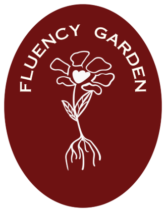

Aulas individuais com método próprio, feitas para a sua rotina. Do diagnóstico ao acompanhamento, cada etapa pensada para a sua fluência real.
A Fluency Garden nasceu de uma convicção: aprender inglês não precisa ser frustrante, genérico ou sem direção. Antes de se tornar escola, começou com o trabalho da Teacher Gabi, professora com 4 anos de experiência que percebeu que a maioria dos alunos abandonava o inglês não por falta de esforço, mas porque nunca tinham recebido o tipo certo de ensino.
Foi a partir dessa observação, somada a muito estudo em Linguística Aplicada e Aquisição de Segunda Língua, que surgiu a necessidade de criar algo diferente: uma escola com metodologia sólida, experiência cuidadosa e acompanhamento real.
Quatro pilares sustentam cada aula, cada plano e cada etapa da sua jornada.
O ensino é estruturado com referências consolidadas da Linguística Aplicada, garantindo progressão e consistência.
O conteúdo é adaptado ao seu contexto, seus objetivos e seu ritmo, sem abrir mão da progressão pedagógica.
A produção oral é trabalhada desde a primeira aula, com segurança e gradualidade.
Diagnóstico, plano individual, relatórios e monitoramento ao longo de toda a jornada.
Estudar na Fluency Garden é diferente desde o primeiro contato. Não é apenas uma aula de inglês: é um desenvolvimento linguístico estruturado.
Muito além de uma prova de nível: mapeamento de proficiência, fluência oral, listening, repertório, gramática e segurança comunicativa.
Cada aluno recebe um plano individual com objetivos linguísticos, competências-alvo e direcionamento claro. Revisado ao longo da jornada.
Aulas comunicativas e contextualizadas, com speaking desde o primeiro encontro e conteúdo conectado à sua vida real.
Periodicamente, o aluno recebe análise real da sua evolução: competências desenvolvidas, pontos de atenção e próximos focos.
O resultado de um processo estruturado: confiança comunicativa real para usar o inglês onde a sua vida pedir.
O professor monitora evolução, ajusta estratégias e está presente além das aulas. Aqui, o aluno nunca está sozinho no processo.
Fluência não acontece por acaso. É construída com estrutura, progressão e significado. Cada pilar da metodologia foi pensado para que o aluno avance com confiança. Toque em cada etapa para explorar.
O desenvolvimento de cada aluno é organizado com base no CEFR, o padrão internacional criado pelo Conselho da Europa. Ele orienta toda a progressão pedagógica, definindo o que o aluno deve ser capaz de fazer com o idioma em cada etapa.
A língua é ensinada como ferramenta de comunicação. A gramática é importante, mas é trabalhada em contexto, conectada a funções comunicativas reais. O aluno aprende quando, como e por que usar cada estrutura.
Toda a metodologia é construída sobre fundamentos da SLA, a área que investiga como o cérebro processa e adquire linguagem. O aluno recebe input no nível certo, produz linguagem ativamente e aprende em ambiente emocionalmente seguro.
Muitos alunos estudam inglês por anos sem conseguir sustentar uma conversa. Aqui, o speaking é trabalhado desde a primeira aula, com gradualidade, segurança e propósito. O foco não é perfeição: é confiança comunicativa real.
O aluno é exposto a diferentes sotaques, velocidades e contextos autênticos. O trabalho desenvolve compreensão global e tolerância à ambiguidade, reduzindo progressivamente a dependência de tradução mental.
A progressão segue princípios da aprendizagem em espiral: o aluno revisita estruturas, amplia repertório e reutiliza a língua em contextos cada vez mais complexos. O avanço depende da capacidade real de usar o idioma.
Em cada aula, o aluno recebe feedback formativo: devolutivas claras sobre o que já domina e o que desenvolver a seguir. Somado aos relatórios pedagógicos periódicos, ele garante que você sempre saiba onde está na jornada.
O objetivo final é sempre a fluência real, não o inglês de prova. Ensino estruturado, comunicativo, progressivo e personalizado, para que você use o idioma com confiança na sua vida real.
Cada programa foi desenhado para um momento diferente da jornada. Seja qual for o seu objetivo, há um caminho estruturado esperando por você.
Para quem aprende melhor ao lado de alguém de confiança: um amigo, um colega de trabalho ou alguém da família. A dupla já vem formada e a progressão é desenhada para os dois.
Cada aula construída em torno dos seus objetivos, contexto e ritmo. Do mercado de trabalho às viagens, o conteúdo se adapta à sua vida real.
Para grupos que querem crescer juntos: equipes de trabalho, turmas de amigos ou famílias. A riqueza de vozes e perspectivas dá ao speaking e ao listening uma dimensão que só o grupo oferece.
Histórias de quem trocou o inglês travado por confiança comunicativa real.
Eu estudava inglês há anos sem conseguir falar. Com o plano individual e o speaking desde a primeira aula, em poucos meses eu já sustentava conversas que antes me travavam completamente.
O diagnóstico mudou tudo. Pela primeira vez alguém me mostrou exatamente onde eu estava e o que precisava desenvolver. Os relatórios me deixam ver a evolução acontecendo de verdade.
As aulas são acolhedoras e ao mesmo tempo muito bem estruturadas. Nunca me senti perdida: sempre sei o que estou aprendendo, por que estou aprendendo e qual é o próximo passo.
Tire suas dúvidas antes de começar. Se não encontrar o que procura, é só falar com a escola!
O diagnóstico é muito mais do que uma prova de nivelamento. É um mapeamento completo das suas competências linguísticas: nível de proficiência, fluência oral, compreensão auditiva, repertório, controle gramatical e segurança comunicativa. A partir daí, construímos um plano de fluência real, não um roteiro genérico.
Depende de alguns fatores: nível de partida, frequência de exposição ao idioma, consistência nos estudos e objetivos específicos. O que podemos dizer é que, com metodologia estruturada, acompanhamento real e comprometimento, o desenvolvimento acontece de forma consistente e visível. Na Fluency Garden, você acompanha sua evolução em cada etapa.
Sim, todas as aulas são realizadas online. O formato permite flexibilidade de agenda sem abrir mão de uma experiência pedagógica de qualidade, com acompanhamento próximo e interação real.
O acompanhamento é contínuo. Além do que acontece dentro das aulas, o aluno conta com relatórios periódicos de evolução, plano de fluência individual e monitoramento de competências ao longo da jornada. O objetivo é que você sempre saiba onde está e o que precisa desenvolver a seguir.
A metodologia da Fluency Garden é baseada em referências consolidadas da Linguística Aplicada: CEFR (padrão internacional de progressão), Ensino Comunicativo (CLT), Ensino Baseado em Tarefas (TBLT) e fundamentos da Aquisição de Segunda Língua (SLA). Na prática: ensino estruturado, comunicativo, progressivo e personalizado. O objetivo final é sempre a fluência real, não o inglês de prova.
Faça o diagnóstico e descubra onde você está e para onde pode ir com a estrutura certa do seu lado.
ou, se preferir, fale agora:
Diagnóstico gratuito · Sem compromisso

Estamos sempre conhecendo educadores que compartilham nossa visão de ensino. Mesmo sem uma vaga aberta no momento, sua candidatura permanece em nosso banco de talentos pedagógico e é considerada quando surge uma oportunidade compatível com seu perfil.